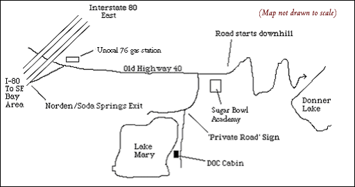

|
|
Reservations and General Cabin Goddess
Mary Choy
523 1/2 Clayton Street
San Francisco, CA 94117
415-722-1711
Directions to the Cabin............................................................................................... 3
Cabin Amenities & What to bring............................................................................. 4
UPON ARRIVAL....................................................................................................................... 5
PARKING................................................................................................................................ 5
DOOR
LOCK.......................................................................................................................... 5
POWER................................................................................................................................... 6
TOILET.................................................................................................................................... 6
WATER................................................................................................................................... 7
HEAT....................................................................................................................................... 7
REFRIGERATOR/FREEZER............................................................................................... 7
UPON DEPARTURE............................................................................................................... 8
DOOR
LOCK.......................................................................................................................... 8
POWER................................................................................................................................... 8
TOILET.................................................................................................................................... 8
WATER................................................................................................................................... 8
REFRIGERATOR/FREEZER............................................................................................... 8
GARBAGE.............................................................................................................................. 9
WOOD
& FIREPLACE/STOVE........................................................................................... 9
CLEANING.............................................................................................................................. 9
LOG
BOOK............................................................................................................................. 9
MISCELLANEOUS................................................................................................................ 10
Wood-Burning
Stove................................................................................................. 10
Fireplace......................................................................................................................... 10
COLD
WEATHER Water Procedures (09/15 – 06/14)....................................... 10
Explanations................................................................................................................................................................... 10
Pump................................................................................................................................................................................. 10
Draining the
System....................................................................................................................................................... 11
Special Note
re: Very Cold Weather.......................................................................................................................... 11
Turning
the water ON:............................................................................................... 12
Turning
the water OFF:............................................................................................ 13
Useful Contact Information................................................................................. 14
DOCNC CABIN READINESS FORM................................................................................. 15
¨Traveling
by car in good weather, allow about 3.5 hours from SF, or about
1 hour from Reno. Traffic on 80 West is notoriously bad, especially on
weekends, so plan appropriately.
¨ Carry
snow chains from 09/15 – 06/14. You will be stopped if your car is not
equipped for snow travel.
1.Drive
169 miles E on I-80.
2.Take
the Norden/Soda Springs exit. There is a sign before this exit that also
includes notification for the Sugar Bowl Ski Resort, which is down the
same road.
3.Make
a right at the top of the exit ramp (you’ll see a Unocal 76 gas station).
Go about 3.9 miles on this road, Old Highway 40 (aka “Donner Pass Road”).
You’ll pass two large Sugar Bowl Ski Resort signs. Immediately past
the 2nd Sugar Bowl sign, you’ll see the Sugar Bowl Ski Academy
on your right. There is an odd, tall grey metal shed before the Academy,
which is a large, white lodge.
If you pass the Academy, you’ll be heading downhill on a curvy road. If so, you have gone too far!
4.Turn
right into the Academy’s parking lot.
5.Beginning
at the back right of the parking lot is a single-lane gravel/dirt road.
SNOW
SEASON (Oct-June -- The
exact “Snow Season” varies widely, of course, but these dates are a general
outline):
This road is unplowed and is usually invisible behind a giant 10-30 foot
berm of snow! If you are travelling during snow season, skip to Snow
Season Parking Procedures on page 5.
Follow the instructions carefully, or a) your vehicle will be towed, and
b) you will jeopardize the long-standing good relationship between Academy
and DOCNC!
6.Continue
about 0.25 miles along this road, curving right. If it’s snow season, you’ll
have to ski, snowshoe or “posthole” in.
7.At the red and white “Private Road” sign on your left (typically buried under the snow during snow season), turn left into the dirt road to the immediate right of the sign itself. Remove the chain across this dirt road, drive through, and re-hook the chain. There is also a small “DOCNC” sign on the post.
8.The
cabin will appear in about 150 yards: first cabin on the right, on the
lakeshore.

¨Bring
a sleeping bag (and a sleeping pad if you would like to sleep outdoors).
There are enough clean mattresses for about a dozen folks, plus two couches,
a deck, and of course, the lakefront beach! It can be quite cold in the
cabin at night during the snow season.
¨Bring
whatever sports equipment you need (e.g.: climbing gear, skis/skins, snowshoes,
hiking boots, mountain bike, etc.), as well as a good book. There is a
cd player in the cabin and several games, packs of cards, etc. There’s
also plenty of space to work/study.
¨Tents,
cooking sets, and utensils are unnecessary. The cabin has a full working
kitchen, including a refrigerator and a sink with running water.
¨Plan
on any combination of hot/sunny, thunderstorm, snowy, or chilly/windy weather.
The cabin is at 7000 feet elevation.
¨The
cabin has wood heat, kitchen, electricity & lights, running water,
indoor chemical toilet and a lake for bathing, skiing, and/or canoeing
(we have a canoe!). The cabin is stocked with sufficient wood, but you
must restock the pile with wood from the basement, as well as chop more
kindling for the next group. (see pp. 9-10). The cabin also has two large
plastic bins to help with food storage (in addition to the cupboards).
Only thetightly shut bins can be
guaranteed mice-free.
¨The
cabin has a phone (530.426.0413) Please use it only if really necessary.
There is no answering machine or voice mail service, and it is sometimes
difficult for people in the cabin to hear the ringer. When placing a call
to the cabin, be sure to let the phone ring for a long time before you
give up.
¨Pets
are allowed, but please be sure to keep your pet(s) well-mannered and respect
anyone with allergies on non-exclusive weekends.
¨There
are a few candlesticks in the cabin. BE EXTREMELY CAREFUL WITH CANDLES.
DO NOT LEAVE THEM UNATTENDED.
Summer:
Drive right up to the cabin and
park! Don’t block the road, and be careful not to spin your wheels and get
stuck in the gravel.
Snow
Season:
You typically cannot drive up to the cabin during
this period because snow blocks the way, starting at the Academy parking lot.
Before departing, you must obtain a parking voucher from Mary Choy and display
it on your windshield, and then hike/ski/snowshoe the road to the cabin. Note
that if there is significant snow, simply walking to the cabin is dificult;
you might be “postholing” up to your thighs. Be prepared with appropriate
clothing or gear, like skis or snowshoes. Hauling food, bedding, drink, etc.
can be a hassle during the snow season too. We recommend bringing a backpack
and/or a sled to help with the hauling.
DOCNC
has purchased the right to park up to three vehicles in the Academy parking
lot per night; additional spaces may be available for a fee from
ASI.
Get a parking voucher from Mary Choy 415-722-1711. mary@marychoy.com
2)When
you arrive, be sure to park in a spot that makes sense given the existing
parked cars. This will make it easier for the snowplow. Do not block the
dumpster.
3)Put
the parking permit on your dashboard.
4)If
new snow falls overnight, be prepared to venture back to the Academy by
8:00AM the next morning to move your car, to allow a full plowing of the
whole Academy parking lot. If you do not move your car to enable plowing,
the Academy may decide to have your car towed, or your car may get so snowed
in and plowed around that it will take you several hours to dig your car
out.
Call
or email Mary Choy to get the four-digit combination to the doorlock. To get the lock open,
it is usually necessary to jiggle/push/pull/hit it vigorously. You should
automatically receive this information with your reservation.
If
you arrive at night, bring a flashlight! After entering, go to the far
left corner (northwest or to the left of the wood stove) of the cabin.
Find the large main circuit breaker and switch it on. It’s the biggest
of all the switches; you really can’t miss it. Do not touch any other switches!
The
following procedures must be followed carefully to ensure our chemical
toilet works well. We appreciate your adhering to the following procedures
and rules.
The
toilet must be primed before use. The toilet needs power in order to be
used, so be sure the general power is turned on first.
1)
Confirm that the drain handle is pushed
all the way in. It is located on the base of the front of the toilet.
2)
Pour 3 gallons of water into the toilet. [water bucket for this purpose
is usually under the sink in the “mud room” and is clearly marked]
3)
Pour 6 ounces (measuring cup located in bathroom) of AquaChem or Refresh
(or similar chemical toilet additive) into the toilet. You should find
supplies on the counter top in the toilet room or on top of the wooden
locking cabinet in the tool room.
4)
As long as there is power running to the toilet, you may flush the toilet
by pushing the black button at the top left of the back of the toilet for
a few seconds.
5)
No toilet paper or paper products (or anything other than bodily wastes)
are to be flushed down the toilet. Place all toilet paper in a paper bag
in the waste bin. This can be burned at the end of the trip or carried
out and thrown away.
NO
POWER? Check
to see if the red light on the black box behind the toilet is on. If it
is not, punch the thin red stick in on the back-end of the box. Now it
should work!
HUMAN WASTE or WATER FLOATING IN
THE BOWL?This means it is full! Carefully pull out
the plunger at the base of the toilet’s front (it can be hard to pull out,
so be patient and don’t kick or move the toilet --- if you do, you could break
the toilet seal and have sewage pouring out all over your feet) to drain it.
This should take about 10 seconds at most. Then re-prime it by repeating
steps 1 through 3 above.
Summer:Everything
should be ready to use. The water should come out when you turn on the
faucet normally, and the hot water heater (to the left of the kitchen sink)
should be plugged in. During summer, please leave the water just as it
is (leave the pipes under the sink in the ON position, and leave the water
heater plugged in.)
COLD
SEASON 09/15 - 06/14There
are special, complex and important Water Procedures during the colder
months (see page 12).
Please read and follow them carefully! During winter, you must turn
the water off and unplug the water heater before you leave.
IMPORTANT:
Do NOT
call the plumber if you encounter any issues with the water without explicit,
prior authorization from Evan Marquit or Mary Choy. Their contact information
is at the bottom of this document.
Use
the wood-burning stove in the living room for heat.
It is the only efficient source of heat for the cabin. Only burn hardwood
(dense and heavy) in it. The wood-burning stove in the living room is very
efficient and can heat the whole cabin. For specific instructions on
the wood-burning stove, see page 10.Hardwood
is stacked directly next to the wood-burning stove.
If you must have "ambience," then use the fireplace. But please use it sparingly (firewood costs the DOCNC, and, hence, YOU, a lot of money). In the fireplace, burn softwood (less dense and lighter than hardwood) only. If there is no softwood available, then do not use the fireplace at all.
The
plug is between the refrigerator and the cabinet to the left, at eye level.
Plug it in and close the door.
Inside the cabin, go to the far left corner
(northwest, or to the left of the wood stove) of the cabin. Find the large
circuit breaker, and switch it off. Do not touch any other switches!
1)Pull
the plunger out to drain the toilet into the holding tank below. This should
take no more than 10 seconds. Plug your nose.
2)Then
push the plunger in again, firmly.
3)Close
the lid of the toilet.
4)Remove
the paper bag of used toilet paper. (Burn it, or port it out to a garbage
dump.)
Summer:Leave
it all as is. That is, the hot water heater should still be plugged in,
and the water should flow if you turn on a faucet handle normally.
COLD
SEASON 09/15 - 06/14:There
are special, complex Water Procedures during the colder months (see
page 13).
Please read and follow them carefully!
1)Remove
all contents. Do not leave any food or drinks behind,
in cupboards or in the refrigerator. The next group of folks do not want
your leftovers, and it contributes to our problems with the mice. When
it’s cold out, drinks that are stored under pressure can explode, etc.
2)Unplug
the refrigerator. The plug is on the left side between the cabinet and
the refrigerator.
3)Empty
ice trays into the sink.
4)Clean
any mess you may have made inside the refrigerator or freezer.
5)Open
the refrigerator and freezer doors and LEAVE THEM OPEN.
Carry out anything you carried in! This rule applies all year round and applies to all types of leftover food (including unopened stuff) and drinks. Please try to recycle. Feel free to burn any paper or cardboard in the fireplace or stove. Place the rest in garbage bags and take it with you.
NOTE: We no longer have access to the
dumpster at Sugar Bowl Academy. Please take all trash out of the cabin and
dispose of it properly. DO NOT leave your trash on or near the SBA dumpster. DO
NOT leave your trash at the cabin. Please pack it all out. Thank you!
Restock
the woodpiles for the wood-burning stove and the fireplace.
Firewood
(with separately marked stacks of softwood and hardwood) is located in
the basement. Climb down the stairs under the trap door in the tool room
(next to the bathroom). The light cord is located above the stairs to the
cellar.
Restock
the kindling. This means chop more kindling out of softwood outdoors
or in the basement, not in the cabin!
Clean
out all cold ashes from stove (and fireplace, if you used it) and place
in metal trashcans on entry porch. Please try to time burning correctly
so you can make sure ashes are cold and that you can fully clean. DO
NOT LEAVE CABIN WITH ANY MATERIALS STILL BURNING IN THE STOVE!
We
all appreciate a spotlessly clean cabin, so please leave it tidier than
it was when you arrived. You’ll be charged $120 if you leave the cabin
untidy. Here are a few points to help:
¨Wash
all dishes.
¨Sweep
and/or vacuum all floors (extra vacuum bags are upstairs).
¨Clean
excess ashes out of the fireplace and the wood stove as instructed above.
¨Wipe
down kitchen counters.
¨Take
all leftover food and drinks with you.
Remember
to lock the door when you leave!
¨The
higher the number on the rotating door vent, the hotter the fire, and the
faster the burn.
¨Never
burn anything other than uncoated paper, cardboard, or wood in either the
wood-burning stove or the fireplace.
¨ALWAYS
keep fire screen in front of the fireplace, except when feeding the fire.
Familiarize yourself with the location of the fire extinguishers and exits.
¨Put
burnable materials well back into the fireplace. This reduces the risk
of a cabin fire and produces less smoke.
¨When
leaving the cabin, be sure any fire is totally extinguished. Place the
screen tightly in front of the fireplace.
When
running water, you will note from time to time that the red light next
to the breaker box in the commons room will come on, indicating that the
pump is running. It should do so only long enough to bring the ballast
tank up to pressure. If you note that the red light is on continually,
and will not shut off, there is either a problem with the pump, or you
have “bad” running water (e.g. an open drain valve, or burst line). Please
check immediately and if necessary turn off the power to the pump only
(not to heating lights).If you
have ANY questions or concerns, please contact Mary Choy or Evan Marquit
(contact info at the bottom of this document)
The
system is intended to be drained by allowing most of the water in the copper
feed lines and the hot water tank to flow outside the cabin in a separate
drain pipe from the sink system.This
is so as not to flood the drain box below ground at the main shutoff.For
this reason it is important to drain the standing water in the main feed
line last.Please follow the procedures
for turning the water off in the order specified to insure proper drainage.
In
very cold weather there is still the slight chance that the pipes can freeze.
Also if you let the cabin go completely cold while the system is activated
this risk is much greater. If water does not flow after correctly following
the procedures listed, please be patient. Open the taps and wait.
The lines usually will thaw as the cabin warms and the heat tapes kick
in. Open the doors under the kitchen sink to allow quicker warming.
If
a pipe does burst most likely this would be in the porch sink system. It
can be isolated it by closing the two yellow valves on the porch sink,
leaving the kitchen sink operational. Please report back any problems with
the water system to Mary Choy.
1.Close
hot and cold water taps
on the kitchen and porch sinks.
2.Close
(turn clockwise) the two green drain valves under the kitchen sink.
3.Turn
on the main water on/off lever under the kitchen sink by
moving it 90 degrees to the right
(counter clockwise). (This lever
is the Silver galvanized pipe covered with duct tape. It is an inverted
"L" shaped pipe that goes through the floor and extends down to the below-ground
shutoff and drain valve in the basement.)
4.Blue valve
under sink should already be open (if the last party followed shutdown
procedures properly)
5.Open hot
water tap on kitchen sink to allow hot water tank to fill. Air will be
forced from the system and you will hear the tank fill. This can take up
to 10 minutes. When water runs from the tap, then the tank is full and
you can close it.
6.Plug
in the water heater AFTER tank is full. Within about 30 minutes,
the water in the tank should heat up and you will have hot running water.
A. Green valves closed.
B.
Blue valve open.
C.
Main ON (right).
D.
Water heater plugged in.
1.UNPLUG
THE WATER HEATER FIRST!!!
2.Close
(turn clockwise) the BLUE valve under the kitchen sink.
3.Turn
OFF the main water on/off lever under the kitchen sink. (Move
the Silver, duct-tape covered handle 90 degrees to the left)
4.Open both
the hot and cold taps on kitchen and porch sinks.
5.Open
(turn counter-clockwise) the two Green valves under the kitchen
sink. Wait approximately 5 minutes until the entire system including
the hot water tank has drained.
6.Open (turn
counter-clockwise) the BLUE valve under the sink. Do this only after
the hot water tank has fully drained. This allows the remaining standing
column of water in the main feed line to drain through the below-ground
shutoff valve.
Summary
of OFF final positions:
A.
Water heater unplugged!
B.
Main on/off lever to left.
C.
Blue valve open.
D.
Green valves open.
E.
Sink taps open
Note:The
RED
valve that controls cold source to the water heater should always be
OPEN. The Yellow valves that control the porch lines (located below
and to the right of the sink) should also always be open.
|
|
USFS
Avalanche Info re: Tahoe Area530.587.2158
Sugar
Bowl Ski Resort530.426.3836
Mary
Choy (DOCNC Sec’y) (don’t call after 9:30pm)415.722.1711
mary@marychoy.com
Evan
Marquit(DOCNC President)415.516.6304
Evan.Marquit.87@Alumni.Dartmouth.org
Sugar
Bowl Ski Academy530.426.6771
DOCNC
Cabin 530.426.0413
Sierra
Club's Clair Tappaan Lodge (Old Highway 40)530.426.3632
CHP
Truckee530.587.1242
CA
Road Conditions800.427.7623
PG&E(DOCNC
billing name is John Kunz)1-800-PGE-5002
Weather:
Bay Area, Central Valley, and Trans-Sierra415.364.7974
Weather:
Sacramento Valley and Sierra530.646.2000
Ski
Phone415.864.6440
Westwide
Avalanche Networkhttp://www.avalanche.org/
California
Snow Surveyhttp://cdec.water.ca.gov/snow/
California
Weatherhttp://iwin.nws.noaa.gov/iwin/textversion/state/ca.html
California
Road Infohttp://www.dot.ca.gov/hq/roadinfo/
Tahoe
National Foresthttp://www.r5.fs.fed.us/tahoe/
DOCNC!http://www.alum.dartmouth.org/clubs/docnc/docnc.html
Please
complete this form and return it to Mary Choy mary@marychoy.com,
523 1/2 Clayton Street, San Francisco, CA 94117
Was
the…Upon ArrivalUpon
departure
Power
off?________________________
Water
off? (Snow season only)________________________
Kindling
stocked?________________________
Refrigerator
off and door open?________________________
Toilet
drained, cleaned, and operable?________________________
Kitchen
and floor clean?________________________
Dishes
clean?________________________
Toilet
Paper?________________________
Paper
towels?________________________
Garbage Bags?________________________
AquaChem?________________________
Matches?________________________
Firewood?________________________
Other
comments: ____________________________________________________________________
__________________________________________________________________________________
__________________________________________________________________________________
Date
Returned: __________________________
Name:__________________________
Class: _________
Email:______________________________________
Street
Address:_______________________________
Telephone:
Day (__ )________________ Evening (___)_______________